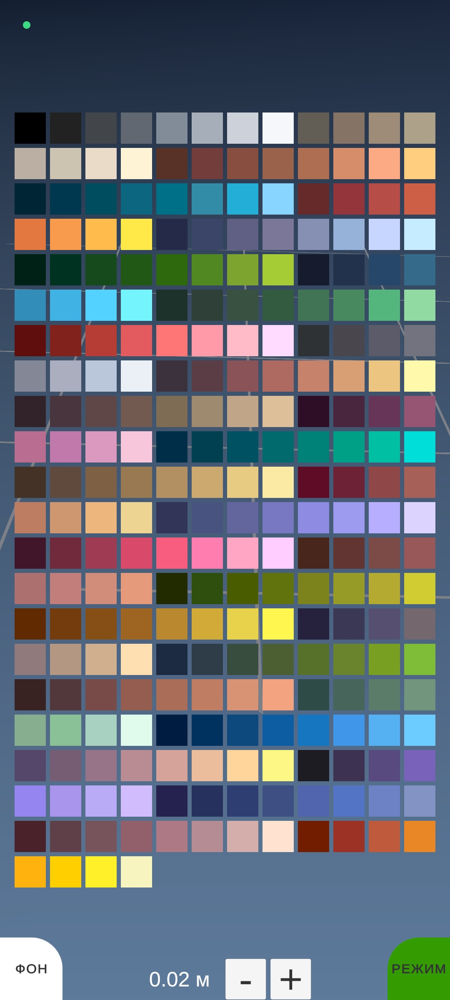

<h1>Constructor AR</h1>
<!-- <a style="text-align: right;" href="">[source code]</a> -->
<h2>AR конструктор для мобильных устрйств</h2>
<br>
<p>Реализовано:</p>
<ul class="list-style-square">
    <li>Постановка блоков по сетке</li>
    <li>Выбор размера блока</li>
    <li>Выбор из 128 цветов</li>
    <li>Выбор режима строительства/удаления</li>
    <li>Смена режима фона камера/градиент</li>
</ul>
<br>

<br>

<br>
<br>
<br>
<br>